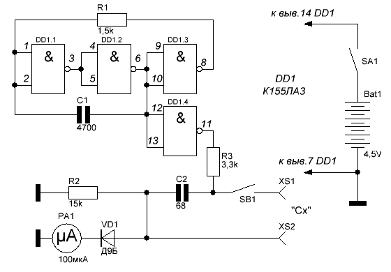
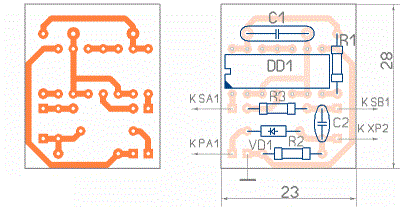
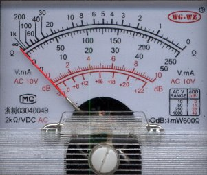
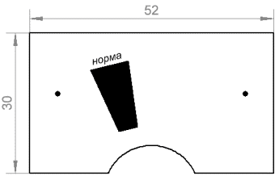
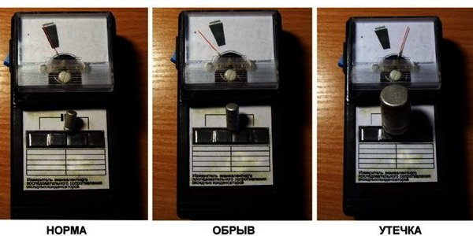

Прибор для проверки конденсаторов
на микросхеме К155ЛА3
Перед сборкой любой схемы желательно проверить исправность устанавливаемых конденсаторов, особенно если они уже были в употреблении. Прибор для проверки конденсаторов (рис. 1) позволяет выявить такие неисправности конденсатора как: обрыв, утечка или замыкание обкладок. Прибор может быть полезен также для выявления плохого конденсатора в уже собранных конструкциях.
Прибор для проверки конденсаторов позволяет проверять любые конденсаторы ёмкостью от 50 пФ и выше.
Основой прибора является собранный на элементах DD1.1— DD1.3 генератор прямоугольных импульсов, частота следования которых составляет около 75 кГц, а скважность примерно 3.

Рис. 1 - Схема прибора для проверки конденсаторов
Детали схемы
- Cx — проверяемый конденсатор;
- C1 — конденсатор К10-17В, 4700 пФ, 50 В;
- C2 —конденсатор К10-17В, 68 пФ, 50 В;
- R1 — резистор МЛТ-0,125, 1,5 кОм;
- R2 — резистор МЛТ-0,125, 15 кОм;
- R3 — резистор МЛТ-0,125, 3,3 кОм;
- VD1 — диод Д9Б (любой из серии Д2, Д9);
- SB1 — кнопка подключения конденсатора;
- SA1 — кнопка подачи питания;
- PA1 — микроамперметр 100 мкА;
- G1 — батарея 3R12, 4,5В;
- DD1 — микросхема К155 ЛА3.
Элемент DD1.4, включенный инвертором, исключает влияние нагрузки на работу генератора. С его выхода импульсное напряжение идет по цепи: резистор R3, конденсатор С2 и проверяемый конденсатор, подключенный к гнездам XS1 и XS2 и далее через диод VD1, микроамперметр РА1 и шунтирующий их резистор R2.
Детали этой нагрузочной цепи подобраны таким образом, что без проверяемого конденсатора в ней ток через стрелочный прибор РА1 не превышает 15 мкА. При подключении проверяемого конденсатора и нажатии кнопки SB1 ток в цепи увеличивается до 40 ... 60 мкА, и если прибор будет показывать ток в этих пределах, то независимо от емкости проверяемого конденсатора можно сделать вывод о его исправности.
Эти пределы тока цепи отмечают на шкале прибора цветными метками. Если емкость проверяемого конденсатора больше 5 мкФ, то при нажатии на кнопку стрелка индикатора резко отклонится до конечной отметки шкалы, а затем, возвращаясь назад, устанавливается в пределах отмеченного сегмента.
Полярный конденсатор "плюсовым" выводом подключают к гнезду XS1. При внутреннем обрыве проверяемого конденсатора стрелка индикатора останется на исходной отметке, а если конденсатор пробит или его внутренне сопротивление, характеризующее ток утечки, менее 60 кОм, стрелка индикатора отклоняется за пределы контрольного сегмента и даже может зашкаливать.
Конденсаторы можно использовать другой марки, например: К10-19, КД-2 и подобные.
Микроамперметр можно использовать любой стрелочный, в том числе можно использовать индикатор от старого магнитофона, установив параллельно ему шунтирующий резистор нужного сопротивления и отградуировав его шкалу по заводскому прибору. Также можно использовать тестер (мультиметр, авометр), установив его на предел измерения 100 мкА, но в приборе для проверки конденсаторов нужно будет установить гнёзда для подключения щупов тестера.
В качестве источника питания можно использовать три любые гальванические элемента (или аккумулятора) по 1,5 В каждый, соединив их последовательно. Также можно использовать сетевой блок питания на напряжение 4-5 В.
Прибор для проверки конденсаторов можно снабдить индикатором подачи питания. Для этого нужно включить последовательно соединённые светодиод (например АЛ307) и резистор на 1 кОм, к выводам 7 и 14 микросхемы. Анод светодиода подсоединить к выводу 14.
Настройка прибора для проверки конденсаторов
После включения питания стрелка должна отклониться до деления примерно 15±3 мкА. В случае необходимости такой ток устанавливают подбором резистора R3. Затем к гнездам «Сх» подключают конденсатор емкостью 220 ... 250 пФ и подбором резистора R2 добиваются отклонения стрелки индикатора до отметки 50 мкА.
После этого замкнув гнезда, убеждаются в отклонении стрелки за пределы шкалы. Монтажную плату устройства вместе с питающей его батареей 3336Л следует разместить в корпусе подходящих размеров. Но прибор можно питать от любого другого источника с напряжением 5 В и током не менее 50 мА.

Рис. 2 - Печатная плата прибора
В качестве микроамперметра можно использовать китайский стрелочный прибор (рис. 3).

Рис. 3 - Шкала стрелочного прибора
Вместо нее изготавливается другая шкала (клеится поверх прежней). На новой шкале отмечается сектор: относительно "родной" шкалы он будет находиться в районе 8...20 Ом по верхним делениям (рис. 4).

Рис. 4 - Новая шкала прибора
Для нормальной работы микроамперметра сопротивление R3 снижено до 100 Ом. Выключатель SB1 не применяется. Всё устройство получает питание от 4-х батареек 1,5 В, то есть 6 В, что ни как не сказывается на работе измерителя. Ток потребления в дежурном режиме с микросхемой К131ЛА3 составил 20,3 мА, в режиме измерения 20,5 мА.

Рис. 6 - Примеры измерений
Источники
elektricvdome.ru - Прибор для проверки конденсаторов
Массовая радиобиблиотека (МРБ), И.А.Нечаев, "Конструкции на логических элементах цифровых микросхем" стр.43, Издательство "Радио и связь"